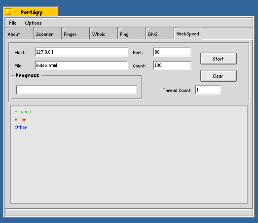
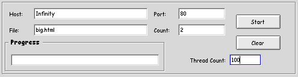
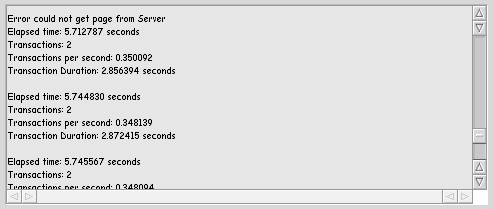
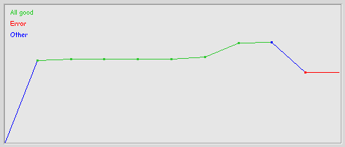
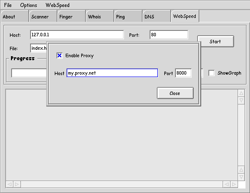

WebSpeed is a extreamly usefull tool origanly developed by Michael Nielsen. It simulates the kind of hits you would get on a http server (web server - port 80) in the real world. The idea is to request a page sever times and avrage the time it takes for the web server to respond. However we have added a few niffty things. Most people acomplish the useing a simple wget. This, however affective, does not give the type of number you are looking for. WebSpeed lets you configure the number of times to request a page (per thread) and how many threads to use while requesting. You may ask, "why multi-threaded?" Well in the real world a serer does not get hit by one person in a liner maner. It gets hit by serveral differand (ie diff threads) and each requests several pages. Thus the 'thread count' can be seen as a users/clients paramiter, and cound is how many each of them request a page. The only draw back is currenty a we only request one page over and over. In the real world a user would requests one page and then follow links off that and request other pages. This is our only draw back.
WebSpeed is a extreamly usefull tool origanly developed by Michael Nielsen. It simulates the kind of hits you would get on a http server (web server - port 80) in the real world. The idea is to request a page sever times and avrage the time it takes for the web server to respond. However we have added a few niffty things. Most people acomplish the useing a simple wget. This, however affective, does not give the type of number you are looking for. WebSpeed lets you configure the number of times to request a page (per thread) and how many threads to use while requesting. You may ask, "why multi-threaded?" Well in the real world a serer does not get hit by one person in a liner maner. It gets hit by serveral differand (ie diff threads) and each requests several pages. Thus the 'thread count' can be seen as a users/clients paramiter, and cound is how many each of them request a page. The only draw back is currenty a we only request one page over and over. In the real world a user would requests one page and then follow links off that and request other pages. This is our only draw back.

Now on to how to set up a simple WebSpeed run. The defualt is set up to scan your local computer and load the index.html page. Let however change some of this. Lets say we have a dedicated web server running Apache on Infinity (192.168.1.39) . Apache (as most webservers) runs on port 80. We have a page called big.html that we want to see how fast loads. We want to simulate 100 users requesting this page twice. The set up would look something like this

Now that its all set up hit the 'Start' button and wait as the responces come fluding back. WebSpeed will return to you a status block of each request giveing the number of requests the time spend for each and the avrage total time. Bellow you can see the text output of WebSpeed. You can also see in this shot that some times we get a error. This is becase I have robinhood set to max 10 connections this scanning with 100 threads makes some (not 90 however, because other threads finish and some of them get the chance to request a page.) time out.

As you can see there is lots of data here and this can become verry messy fast. Thus we provid a simple Graph method of displaying the output. To turn this on there is a check box labeld 'show graph' (Not in picture above sorry) This will provide a graph of each thread and the Transaction Per Second of that thread. The Graph updates live as you run WebSpeed and will be in the form of a line starting at the left|bottom and slopeing up to the top|right. All green lines show a valid result. A red line shows some error in that thread and blue lines are transition lines between error threads and valid ones. Here is the result of a 10 thread WebSpeed

WebSpeed has the ability to run through a Proxy server. So if your behind a firewall or a Proxy server you can still use WebSpeed. Just Click on the
WebSpeed tab and a menu item will be added to the mail window.

Now you can go in and set up the address to your proxy server and what port its on. WebSpeed does not currently save off the settings so you will have to
enable and set this each time you want to use proxy support.
Hopefully you will find WebSpeed usefull for testing the preformance of your web server. If you have any feature requests please let me know YNOP
NOTICE: WebSpeed is desigend for testing the speed of a web server. It should only be used with premition of the owner/webmaster/ISP that your are trying to WebSpeed. Any other use of this tool could result in 'you' getting in big trouble. Use of WebSpeed tool one a web server or any other host can be seen as a DoS (denial of service) attack. We hold no responcibily for the missuses of this tool by ignorate partys. As a way to prevent this from happening PortSpy WebSpeed sends along with it a user agent line. this will show up as "User-Agent: PortSpy (WebSpeed)" in most log files. We currently also limit the thread cound to 100 in attempt to provent saturation of a host.
Back to PortSpy docs
PortSpy is copyright YNOP Talton 1999,2000